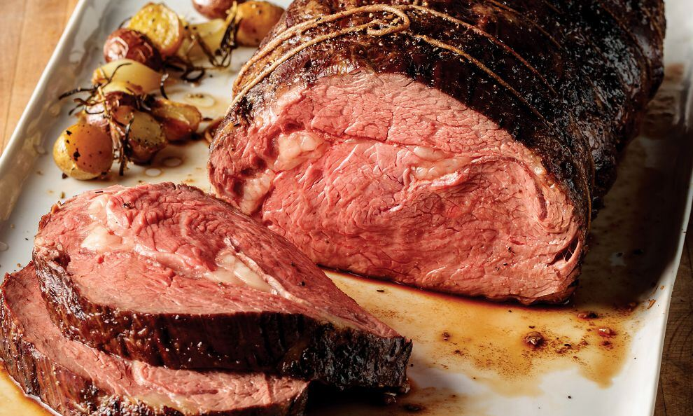

Prime Rib

Description
Prime rib is the perfect holiday or celebratory meal.This recipe will help you make the meal that you and
all of your guests have been waiting all year for. Remember to leave a reveiw when you have made and tasted
the prime rib of your lifetime.
Ingredients
4 pounds prime rib roast
¼ cup unsalted butter, softened
1 tablespoon freshly ground black pepper
1 teaspoon herbes de Provence
kosher salt
Steps
- Place rib roast on a plate and bring to room temperature, about 4 hours.
- Preheat an oven to 500 degrees F (260 degrees C).
- Combine butter, pepper, and herbes de Provence in a bowl; mix until well blended. Spread butter mixture evenly over entire roast. Season roast generously with kosher salt.
- Roast the 4-pound prime rib (see footnote if using a larger and smaller roast) in the preheated oven for 20 minutes. Turn the oven off and, leaving the roast in the oven with the door closed, let the roast sit in the oven for 2 hours. Remove roast from the oven, slice, and serve.